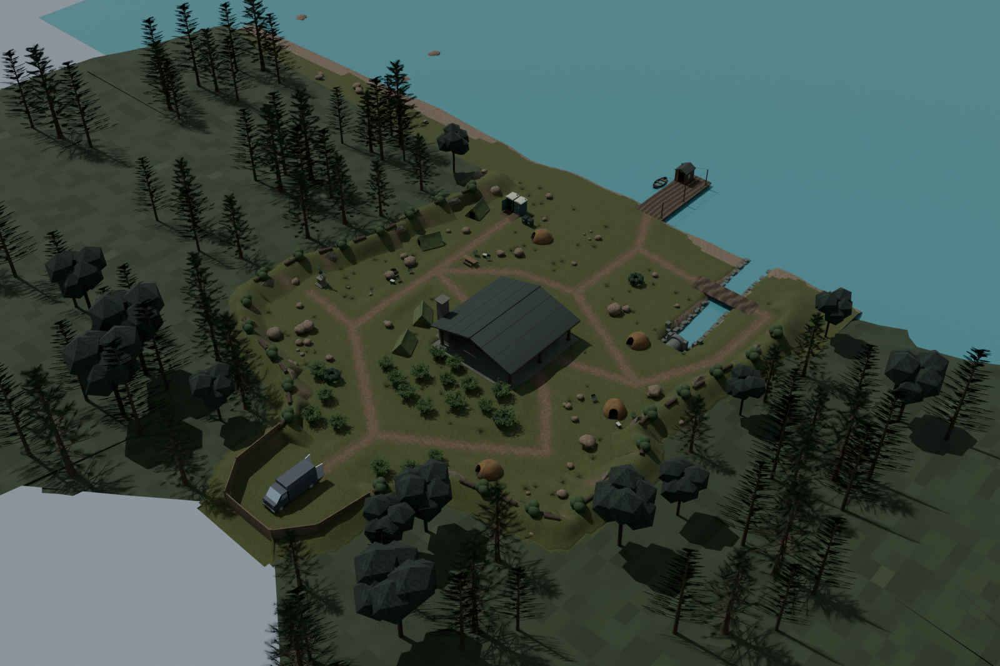
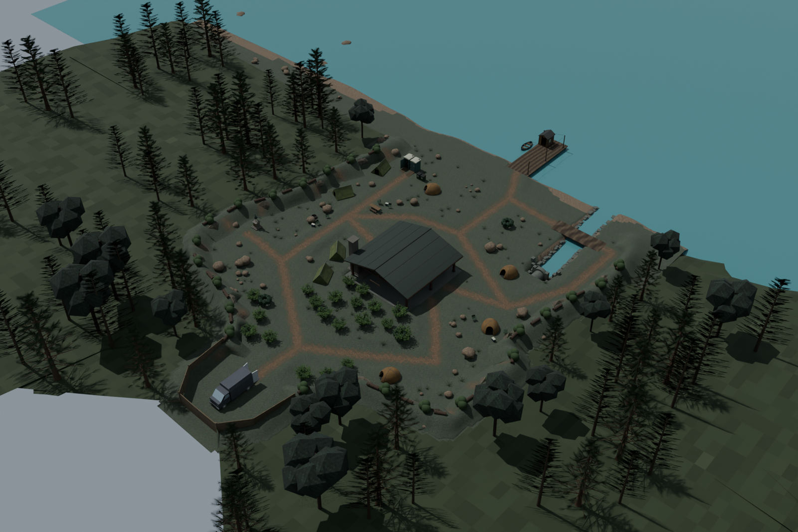
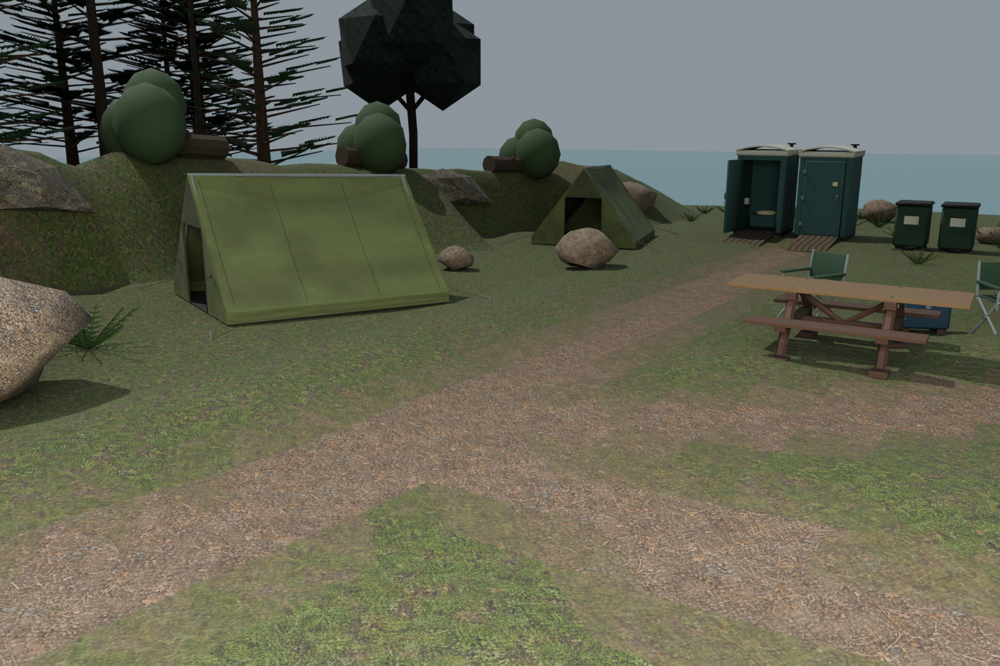
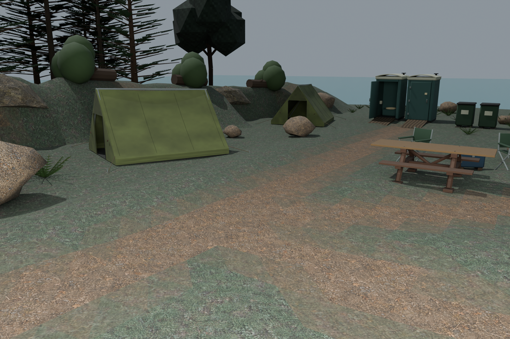

25 October 2026 · Matched native material review
The first greener pass was too yellow against the distant wood. This revision uses the woodland's cooler, desaturated grey-green palette. The same green appears on ground, banks and shore returns; worn dirt paths and bare water margins remain. Cameras, lighting, exposure, all909 mesh shapes and placements, and original UVs are unchanged.




Native Blender captures, not gameplay screenshots. Four packed editable models and runtime GLBs pass1,152 actual loader pixel checks. Current physics still uses the verified route-grade source; this material variant preserves its geometry exactly. The map remains locked. Broader environmental material and path-blending refinement remains open.